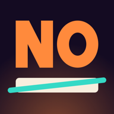

<!DOCTYPE html>
<html lang="en">
<head>
<meta charset="utf-8">
<meta name="viewport" content="width=device-width, initial-scale=1, viewport-fit=cover">
<meta name="theme-color" content="#140b22">
<meta name="apple-mobile-web-app-capable" content="yes">
<meta name="mobile-web-app-capable" content="yes">
<meta name="apple-mobile-web-app-status-bar-style" content="black-translucent">
<meta name="apple-mobile-web-app-title" content="No Depends">
<link rel="manifest" href="manifest.webmanifest">
<link rel="apple-touch-icon" href="icon-180.png">
<link rel="icon" type="image/png" sizes="192x192" href="icon-192.png">
<title>No Depends</title>
<link rel="preconnect" href="https://fonts.googleapis.com">
<link rel="preconnect" href="https://fonts.gstatic.com" crossorigin>
<link href="https://fonts.googleapis.com/css2?family=Instrument+Sans:wght@400;500;600;700&family=Unbounded:wght@700;900&display=swap" rel="stylesheet">
<style>
/* One world: an Ibiza night. Sunset orange argues against sea turquoise; the question sits on a cream playing card. */
:root{
  color-scheme: dark;
  --night:#140b22;
  --deck:#20143a;
  --line:#3d2c5c;
  --cream:#f7eede;
  --ink:#1b1030;
  --muted:#b6a7cc;
  --sun:#ff8a3c;
  --sea:#35d9c6;
  --warn:#ff5d7a;
  --display:"Unbounded","Arial Black",Impact,sans-serif;
  --body:"Instrument Sans","Helvetica Neue",Arial,sans-serif;
}
*{box-sizing:border-box}
html,body{height:100%;margin:0}
body{
  background:
    radial-gradient(120% 55% at 50% 108%, rgba(255,138,60,.28), transparent 62%),
    radial-gradient(90% 40% at 85% -8%, rgba(53,217,198,.16), transparent 60%),
    var(--night);
  background-attachment:fixed;
  color:var(--cream);
  font-family:var(--body);
  font-size:16px;
  line-height:1.45;
  -webkit-font-smoothing:antialiased;
}
#app{
  max-width:480px;min-height:100%;margin:0 auto;
  padding:max(20px,env(safe-area-inset-top)) max(18px,env(safe-area-inset-right)) max(28px,env(safe-area-inset-bottom)) max(18px,env(safe-area-inset-left));
  display:flex;flex-direction:column;gap:18px;
}
h1,h2,p{margin:0}
button,input{font:inherit;color:inherit}
button{cursor:pointer;-webkit-tap-highlight-color:transparent}
:focus-visible{outline:3px solid var(--cream);outline-offset:3px}

/* Home */
.title{
  font-family:var(--display);font-weight:900;
  font-size:clamp(46px,15vw,72px);line-height:.92;letter-spacing:-.02em;
  text-transform:uppercase;padding-top:10px;
}
.title .no{color:var(--sun);display:block}
.title .dep{position:relative;display:inline-block;color:var(--cream)}
.title .dep::after{
  content:"";position:absolute;left:-3%;right:-3%;top:46%;height:.13em;
  background:var(--sea);transform:rotate(-4deg);border-radius:99px;
}
.mark{width:56px;height:56px;border-radius:14px;box-shadow:0 0 0 1px rgba(255,255,255,.12)}
.title{padding-top:0}
.tag{font-size:18px;font-weight:500;color:var(--cream);max-width:26em}
.block{display:flex;flex-direction:column;gap:10px}
.label{
  font-family:var(--display);font-size:11px;font-weight:700;letter-spacing:.14em;
  text-transform:uppercase;color:var(--muted);
}
.chips{display:flex;flex-wrap:wrap;gap:8px}
.chip{
  min-height:44px;padding:0 14px;border-radius:99px;
  border:1.5px solid var(--line);background:transparent;
  display:inline-flex;align-items:center;gap:8px;font-weight:600;font-size:15px;
}
.chip small{color:var(--muted);font-weight:500;font-variant-numeric:tabular-nums}
.chip[aria-pressed="true"]{background:var(--cream);border-color:var(--cream);color:var(--ink)}
.chip[aria-pressed="true"] small{color:#6b5a86}
.chip.player{background:var(--deck)}
.chip.player .x{color:var(--muted);font-size:18px;line-height:1}
.add{display:flex;gap:8px}
.add input{
  flex:1;min-width:0;min-height:48px;padding:0 14px;border-radius:14px;
  border:1.5px solid var(--line);background:var(--deck);
}
.add input::placeholder{color:var(--muted)}
.hint{color:var(--muted);font-size:14px}
.how{margin:0;padding:0 0 0 20px;display:flex;flex-direction:column;gap:4px;color:var(--cream)}
.how li::marker{color:var(--sun);font-weight:700}

/* Buttons */
.btn{
  min-height:56px;padding:10px 18px;border-radius:16px;border:0;
  font-family:var(--display);font-weight:700;font-size:14px;letter-spacing:.04em;text-transform:uppercase;
  background:var(--cream);color:var(--ink);width:100%;
}
.btn.sun{background:var(--sun)}
.btn.sea{background:var(--sea)}
.btn.ghost{background:transparent;color:var(--cream);border:1.5px solid var(--line)}
.btn.small{min-height:48px;width:auto;font-size:12px;padding:8px 14px}
.btn[disabled]{opacity:.4;cursor:not-allowed}
.row{display:flex;gap:10px}
.row > *{flex:1}
.stack{display:flex;flex-direction:column;gap:10px}

/* Top bar */
.bar{display:flex;align-items:center;justify-content:space-between;gap:12px}
.bar .count{font-family:var(--display);font-size:12px;font-weight:700;letter-spacing:.12em;text-transform:uppercase;font-variant-numeric:tabular-nums}
.link{background:none;border:0;color:var(--muted);font-weight:600;min-height:44px;padding:0 4px;text-decoration:underline;text-underline-offset:3px}

/* The card */
.card{
  background:var(--cream);color:var(--ink);border-radius:24px;
  padding:18px 18px 16px;display:flex;flex-direction:column;gap:16px;
  box-shadow:0 18px 40px -18px rgba(0,0,0,.7), 0 0 0 1px rgba(255,255,255,.08);
}
.card.dealt{animation:deal .32s cubic-bezier(.2,.8,.2,1)}
.card.shake{animation:shake .45s}
@keyframes shake{0%,100%{transform:none}20%{transform:translateX(-9px) rotate(-1.5deg)}40%{transform:translateX(8px) rotate(1.2deg)}60%{transform:translateX(-6px)}80%{transform:translateX(4px)}}
@keyframes deal{from{transform:translateY(14px) rotate(-1.2deg)}to{transform:none}}
.card-top{
  display:flex;justify-content:space-between;
  font-family:var(--display);font-size:11px;font-weight:700;letter-spacing:.14em;text-transform:uppercase;
  color:#6b5a86;font-variant-numeric:tabular-nums;
}
.q{font-size:clamp(20px,5.6vw,24px);font-weight:600;line-height:1.3;text-wrap:balance}
.sides{display:grid;grid-template-columns:1fr 1fr;gap:8px;position:relative}
.side{
  border-radius:16px;padding:12px 12px 14px;min-height:92px;
  display:flex;flex-direction:column;gap:6px;justify-content:flex-end;
  color:var(--ink);
}
.side.a{background:var(--sun)}
.side.b{background:var(--sea);text-align:right;align-items:flex-end}
.side .who{font-family:var(--display);font-size:10px;font-weight:700;letter-spacing:.1em;text-transform:uppercase;opacity:.8;overflow-wrap:anywhere}
.side strong{font-size:18px;line-height:1.2;font-weight:700;overflow-wrap:anywhere}
.vs{
  position:absolute;left:50%;top:50%;transform:translate(-50%,-50%) rotate(-8deg);
  width:40px;height:40px;border-radius:50%;background:var(--ink);color:var(--cream);
  display:grid;place-items:center;font-family:var(--display);font-size:11px;font-weight:900;
  border:3px solid var(--cream);
}

/* Phases */
.phase{display:flex;flex-direction:column;gap:12px}
.phase h2{font-family:var(--display);font-size:20px;font-weight:900;text-transform:uppercase;line-height:1.1;text-wrap:balance}
.clock{
  font-family:var(--display);font-weight:900;font-size:84px;line-height:1;
  font-variant-numeric:tabular-nums;text-align:center;
}
.clock.a{color:var(--sun)} .clock.b{color:var(--sea)}
.track{height:10px;border-radius:99px;background:var(--deck);overflow:hidden}
.fill{height:100%;transform-origin:left center;border-radius:99px}
.fill.a{background:var(--sun)} .fill.b{background:var(--sea)}
.speaker{text-align:center;font-weight:600}
.depends{
  display:flex;flex-wrap:wrap;align-items:center;gap:8px;
  padding-top:14px;border-top:1px dashed var(--line);
}
.depends span{color:var(--muted);font-size:14px;margin-right:auto}
.pen{
  min-height:44px;padding:0 12px;border-radius:12px;background:transparent;
  border:1.5px solid var(--warn);color:var(--warn);font-weight:700;font-size:14px;
}
.note{color:var(--warn);font-weight:600;font-size:14px}

/* Scores */
.scores{list-style:none;margin:0;padding:0;display:flex;flex-direction:column;gap:6px}
.scores li{
  display:flex;justify-content:space-between;align-items:center;gap:12px;
  padding:12px 14px;border-radius:14px;background:var(--deck);font-weight:600;
}
.scores li.top{background:var(--cream);color:var(--ink)}
.scores b{font-family:var(--display);font-size:18px;font-variant-numeric:tabular-nums}
.big{font-family:var(--display);font-weight:900;font-size:clamp(34px,11vw,52px);line-height:1;text-transform:uppercase;text-wrap:balance;overflow-wrap:anywhere}
.big.a{color:var(--sun)} .big.b{color:var(--sea)}
.foot{margin-top:auto;color:var(--muted);font-size:13px;text-align:center;padding-top:8px}

/* Face-down card, final countdown, winner poster */
.card.back{
  background:linear-gradient(160deg,#2b1848,#170c28);color:var(--cream);border:2px solid var(--cream);
  width:100%;min-height:320px;align-items:center;justify-content:center;text-align:center;gap:16px;padding:34px 18px;
}
.card.back img{width:96px;height:96px;border-radius:22px}
.card.back .names{font-family:var(--display);font-weight:900;font-size:20px;text-transform:uppercase;line-height:1.2;overflow-wrap:anywhere}
.card.back .names em{font-style:normal;color:var(--muted);font-size:13px;padding:0 6px}
.card.back .tap{font-family:var(--display);font-size:11px;font-weight:700;letter-spacing:.14em;text-transform:uppercase;color:var(--sun)}
.card.flip{animation:flip .42s cubic-bezier(.2,.8,.2,1)}
@keyframes flip{from{transform:perspective(900px) rotateY(88deg) scale(.96)}to{transform:perspective(900px) rotateY(0) scale(1)}}
body[data-tense]::after{
  content:"";position:fixed;inset:0;pointer-events:none;border:8px solid var(--sun);
  animation:tense 1s ease-in-out infinite;
}
body[data-tense="b"]::after{border-color:var(--sea)}
@keyframes tense{0%,100%{opacity:.15}50%{opacity:1}}
body[data-tense] .clock{animation:beat 1s ease-in-out infinite}
@keyframes beat{0%,100%{transform:none}50%{transform:scale(1.12)}}
.poster{
  border-radius:24px;padding:20px 18px 18px;border:1px solid var(--line);
  background:radial-gradient(120% 60% at 50% 118%, rgba(255,138,60,.5), transparent 62%),linear-gradient(160deg,#2b1848,#170c28);
  display:flex;flex-direction:column;gap:14px;
}
.poster-top{display:flex;align-items:center;gap:10px;font-family:var(--display);font-weight:900;font-size:14px;letter-spacing:.06em;text-transform:uppercase}
.poster-top img{width:40px;height:40px;border-radius:10px}
.poster .scores li{background:rgba(255,255,255,.07)}
.poster .scores li.top{background:var(--cream)}
.poster-foot{font-family:var(--display);font-size:10px;font-weight:700;letter-spacing:.14em;text-transform:uppercase;color:var(--cream);opacity:.75;text-align:center;padding-top:4px}

/* Twist + winner burst */
.twist{
  border:1.5px dashed var(--sea);border-radius:16px;padding:10px 14px;background:var(--deck);
  display:grid;grid-template-columns:auto 1fr;column-gap:10px;row-gap:2px;align-items:baseline;transform:rotate(-1deg);
}
.twist span{font-family:var(--display);font-size:10px;font-weight:700;letter-spacing:.14em;text-transform:uppercase;color:var(--sea)}
.twist strong{font-family:var(--display);font-size:14px;font-weight:900;text-transform:uppercase}
.twist p{grid-column:1 / -1;color:var(--cream);font-size:15px}
.burst{position:relative;height:0}
.burst i{
  position:absolute;left:36px;top:26px;width:10px;height:10px;border-radius:3px;background:var(--c);
  opacity:0;animation:pop .9s ease-out forwards;
}
@keyframes pop{0%{opacity:1;transform:rotate(var(--a)) translateX(0) scale(1)}100%{opacity:0;transform:rotate(var(--a)) translateX(var(--d)) scale(.4)}}
@media (prefers-reduced-motion:reduce){.card.dealt,.card.shake,.card.flip,body[data-tense]::after,body[data-tense] .clock{animation:none}.burst{display:none}}
</style>
</head>
<body>
<main id="app"></main>
<script>
const CARDS=[[1,"Exes","Your ex cheated on you after 2 years and blocked you everywhere. Tonight they walk up in tears and say they've done a year of therapy and miss you.","Walk away","Hear them out"],[2,"Exes","Your ex was the nicest person ever — you broke up only because you moved cities. You're back now and they're single.","Text them","Leave it"],[3,"Exes","You were in a toxic on-off thing with your ex for 3 years. They're in the club tonight with someone new, looking happy.","Say hi","Pretend you didn't see them"],[4,"Exes","Your ex dumped you by text after 6 months. They now DM you a 🔥 on your story.","Reply","Leave on seen"],[5,"Exes","Your ex owes you £200 and never paid it back. You see them buying a round of shots.","Ask for it right there","Let it go"],[6,"Exes","Your ex of 1 year is now dating your best friend. Your friend asks if you're \"okay with it\".","Honest answer","\"yeah, all good\""],[7,"Exes","Your Uber driver is your ex — you were together 4 months, it ended badly, and the ride is 25 minutes.","Chat","Headphones in"],[8,"Exes","The DJ plays the song from your first kiss with an ex who ghosted you.","Dance like you don't care","Leave the floor"],[9,"Exes","Your ex of 3 years — no cheating, you just grew apart — is getting married next month and invites you.","Go","Don't go"],[10,"Exes","Your ex who cheated on you twice is now posting about \"healing\" and \"growth\" on TikTok.","Comment something","Scroll past"],[11,"Exes","Your ex dumped you right before your birthday last year. This year they send \"happy birthday ❤️\" at midnight.","Reply","Ignore"],[12,"Exes","Your ex of 1 year is still friends with your mum and she invites them to Sunday lunch.","Go anyway","Skip it"],[13,"Exes","Your toxic ex — 2 years of arguments every week — texts at 2am: \"I've changed, I swear\". Your friends say it's true: new job, sober for 6 months.","Reply","Block"],[14,"Exes","Your ex was amazing but cheated once, at the very end, and told you themselves. Would you ever take them back?","Yes","No"],[15,"Exes","Your ex starts dating someone who looks exactly like you.","Flattered","Creeped out"],[16,"Exes","Your ex still has your hoodie — your favourite one — after 8 months.","Ask for it back","Let it go forever"],[17,"Exes","Your ex of 6 months still has your Netflix password and watches every night.","Change it","Leave it"],[18,"Exes","You and your ex had a clean, friendly breakup a year ago. They ask to be friends.","Yes","No"],[19,"Exes","Your ex ghosted you after 2 years — not one word, they just vanished. You see them in the club tonight.","Go up to them","Act like they're a stranger"],[20,"Exes","Your ex hooks up with your cousin at a family wedding.","Say something","Never speak of it"],[21,"Exes","Your ex — the one who said you'd \"never find anyone better\" — sees you tonight with someone way hotter.","Walk past slowly","Don't even look"],[22,"Exes","Your ex begged you not to leave, then got a new partner 2 weeks later.","Respect","Red flag"],[23,"Exes","Your ex and you are both single and both drunk tonight. You've been broken up 3 months, and it was mutual.","Kiss them","Go home"],[24,"Exes","Your best friend secretly stayed friends with your toxic ex for a year.","Forgive your friend","Done with them"],[25,"Exes","Your ex posts a photo of you two on the anniversary of your first date. You've both moved on.","Like it","Ignore it"],[26,"Exes","Your ex was boring but the kindest person you've ever dated. Your new partner is exciting but forgets your plans. Which one would you go back to?","The kind ex","The exciting one"],[27,"Exes","Your ex wants your opinion on an outfit for a date with their new partner.","Help them","Say no"],[28,"Exes","Your ex left you for your best friend — the one you've known since you were 6. 2 years later they break up and your friend wants your friendship back.","Yes","No"],[29,"Exes","You find out your ex told everyone you were the reason it ended — you weren't.","Clear your name","Let it go"],[30,"Exes","Your ex moved abroad and sends you a voice note from Ibiza at 4am: \"this one's for you\".","Listen to it","Delete it"],[31,"Exes","Your ex of 2 years cheated on you with their \"just a friend\". That friend is now in front of you at the bar.","Say something","Ignore them"],[32,"Exes","Your ex, who never once came to your events, shows up tonight and posts a story tagging you.","Repost it","Ignore it"],[33,"Exes","Your ex said they \"weren't ready for a relationship\". A month later they're engaged.","Laugh it off","Text them"],[34,"Exes","Your ex was a great partner but their family hated you for 2 years. Their mum now likes all your photos.","Block her","Keep her"],[35,"Exes","Your ex keeps watching every story within 2 minutes — you've been broken up 8 months.","Block them","Post something better"],[36,"Exes","Your ex texts \"I saw you last night, you looked good\". You didn't see them at all.","Reply","Leave it"],[37,"Exes","Your ex kept your dog after the breakup. They offer you weekends with it.","Yes","Too painful"],[38,"Exes","Your ex — sweet, no drama, you dumped them — is now with someone who treats them badly.","Warn them","Stay out of it"],[39,"Exes","Your ex says they want to \"talk properly\" after a year of silence — over dinner, and they're paying.","Go","Don't"],[40,"Exes","Your new partner wants to meet your ex of 3 years \"just to see what they're like\".","Allow it","Say no"],[41,"Exes","Your ex is now a famous influencer with 500k followers and mentions \"a toxic ex\" in a video — clearly you.","Reply publicly","Stay silent"],[42,"Exes","Your ex of 4 years sends a 3-page message saying sorry for everything. You're happy and single now.","Reply","Leave on read"],[43,"Exes","Your ex sends a song on Spotify every Sunday at midnight, no message. It's been 6 weeks.","Say something","Let it keep happening"],[44,"Exes","Your ex becomes your new boss's partner — you have to see them at the work Christmas party.","Go","Call in sick"],[45,"Exes","Your ex cheated, apologised and changed — your friends all say they've really grown.","Give them one more chance","Never"],[46,"Exes","Your ex was the one who got away — you messed it up, not them. They're single tonight and standing 3 metres away.","Go up to them","Let them be"],[47,"Exes","You're on a first date and your ex sits at the next table — on a date of their own.","Stay","Switch restaurants"],[48,"Exes","Your ex's new partner DMs you: \"can I ask you something about them?\"","Answer","Ignore"],[49,"Exes","Your ex who lied to you for a whole year asks you to be their reference for a job. Without it they lose their flat.","Help them","Say no"],[50,"Exes","Your ex and your current partner both text you \"happy new year\" at exactly midnight. Which one do you open first?","My ex","My partner"],[51,"Exes","Your ex of 2 years still has a tattoo of your name — and you were the one who dared them to get it. They ask you to pay half to cover it up.","Pay","No"],[52,"Exes","You run into your ex on holiday abroad — same hotel, same week, both single.","Hang out","Avoid them all week"],[53,"Exes","Your ex says you were \"the best they ever had\" — in front of their new partner.","Smile","Walk away"],[54,"Dates","First date. Best date of your life — gorgeous, funny, you talked for 5 hours — but they were rude to the waiter twice.","Second date","Done"],[55,"Dates","First date. They're sweet but boring — 2 hours and no laughs. The bill comes and they offer to pay.","Second date","Done"],[56,"Dates","Third date. They split the bill to the exact penny — £23.47 each.","Ick","Fair"],[57,"Dates","Second date. They say \"I love you\" and they mean it — and honestly, these were the two best dates you've ever had.","Run","Stay"],[58,"Dates","First date. They show up 40 minutes late with no text. They're the hottest person you've ever matched with.","Stay","Leave"],[59,"Dates","They're perfect in every way — but they've never heard of house music and say it's \"just noise\".","Deal-breaker","Not a deal-breaker"],[60,"Dates","Your date is a 10/10 kisser and a 2/10 dancer. Would you take them clubbing?","Yes","No"],[61,"Dates","Your date orders for you without asking — and gets it exactly right.","Ick","Cute"],[62,"Dates","You booked two dates on the same night by mistake. One's a 3-month talking stage, one's a new match who's way hotter. Who gets cancelled?","The 3-month talking stage","The hot new match"],[63,"Dates","Your date's mum follows you on Instagram after one date.","Follow back","Ignore"],[64,"On the night","You've been locking eyes with someone on the dance floor all night. They're with a group and haven't come over.","Go up to them","Wait"],[65,"On the night","Someone sends you a drink — you don't fancy them at all, but it's your favourite drink.","Accept it","Send it back"],[66,"On the night","You're kissing someone you really like and your mum calls 3 times in a row.","Answer","Decline"],[67,"On the night","You're about to leave with someone you've fancied for months. Your best friend is crying in the toilets — over the same guy, for the fourth time this month.","Stay with your friend","Go"],[68,"On the night","You spill a full drink on the person you fancy — white top, totally soaked.","Own it with a joke","Apologise and hide"],[69,"On the night","You find out the person you've been flirting with all night is 10 years older than you.","Still in","Out"],[70,"On the night","You kiss someone at midnight. By morning they've viewed your story but haven't texted.","Text first","Let it go"],[71,"On the night","You're stuck in the smoking area for 10 minutes with someone who ghosted you after 3 dates.","Bring it up","Small talk"],[72,"Friends","Your best friend's ex — together 2 years, broke up 6 months ago, it was messy — asks you out. You liked them long before your friend ever did.","Yes","No"],[73,"Friends","Your best friend's ex — dated 3 weeks, years ago, no drama — asks you out.","Yes","No"],[74,"Friends","Your friend's new partner is clearly flirting with you all night.","Tell your friend","Stay out of it"],[75,"Friends","You see your friend's partner kissing someone else in the club — and it's your friend's birthday night.","Tell your friend tonight","Wait until tomorrow"],[76,"Friends","Your friend is flirting with the person you told them you liked — they know you like them.","Say something","Let it play out"],[77,"Friends","You've got one ticket left for tonight: your best friend or the person you're dating. Who gets it?","My best friend","The person I'm dating"],[78,"Phones","You find your partner of 1 year still has Hinge on their phone — last opened yesterday.","Ask them","Check yourself"],[79,"Phones","You get a text clearly meant for someone else: \"can't wait to see you tonight 😏\" — from your partner.","Confront them now","Wait and watch"],[80,"Phones","Your crush posts a story at the same club as you, with someone you don't know on their arm.","Go find them","Stay away"],[81,"Phones","Your situationship of 5 months posts a new person on their story — someone you've never heard of.","Ask them about it","Never mention it"],[82,"Phones","Your crush texts \"you up?\" at 3am. You've been waiting for them to text for 2 weeks.","Reply now","Make them wait till morning"],[83,"Phones","You accidentally like your toxic ex's photo from 2019 — a year of silence, and they've definitely seen the notification.","Unlike it anyway","Leave it and act unbothered"],[84,"Phones","Your partner wants to read every message in your phone — and you have nothing to hide.","Hand it over","Say no on principle"],[85,"Phones","Your date's phone lights up on the table: \"miss you ❤️\" from a name you don't know.","Ask straight away","Wait to see what they say"],[86,"Relationships","You're 3 months in. He's sweet, texts every morning — but he still hasn't introduced you to a single friend.","Ask why","Give it more time"],[87,"Relationships","You're 1 year in. She's amazing, but she's never once posted you on Instagram.","Bring it up","Doesn't matter"],[88,"Relationships","You're 6 months in. He forgot your birthday, then made it up with a weekend away.","Forgiven","Still a red flag"],[89,"Relationships","You're 2 years in. She still has her ex's number and they text \"happy birthday\" every year.","Fine","Not fine"],[90,"Relationships","You're 4 months in. He's perfect, but he's never paid for a single date — he's a student and you earn double.","Say something","Split it forever"],[91,"Relationships","You're 8 months in. She goes through your phone while you sleep — her last partner cheated on her for a year. You've got nothing to hide.","Confront her","Let it go"],[92,"Relationships","You're 1 year in. He wants to move in together — you love him but you're not ready.","Say yes","Say \"not yet\""],[93,"Relationships","You're 5 months in. She says \"I love you\" every day — you haven't said it back once.","Say it","Wait until you mean it"],[94,"Relationships","You're 2 months in. He still has Hinge on his phone \"just to delete it later\".","Ask him to delete it now","Trust him"],[95,"Relationships","You're 3 years in. She's loyal and kind, but the spark is gone and you're bored.","Stay","Leave"],[96,"Relationships","You're 6 months in. He goes clubbing every weekend without you and doesn't invite you.","Ask to come","Let him have his space"],[97,"Relationships","You're 1 year in. Her best friend clearly hates you and she never defends you.","Make her choose","Let it go"],[98,"Relationships","You're 7 months in. He likes a model's photos every single day.","Say something","Ignore it"],[99,"Relationships","You're 4 months in. She cancels plans last minute — the third time this month.","Talk about it","End it"],[100,"Relationships","You're 2 years in. He's great, but his mum still does his washing and makes his decisions.","Deal-breaker","Not a deal-breaker"],[101,"Relationships","You're 9 months in. She wants a \"break\" for 2 weeks to \"figure things out\".","Accept it","Say it's over"],[102,"Relationships","You're 1 year in. He's still friends with his ex and they meet for coffee every month — just the two of them.","Okay","Not okay"],[103,"Relationships","You're 3 months in. She's never once asked how your day was.","Bring it up","It's over"],[104,"Relationships","You're 6 months in. He wants your location shared 24/7 — and offers to share his too.","Share it","Say no"],[105,"Relationships","You're 18 months in. She got drunk and kissed someone else, then told you herself the next morning.","Forgive","Leave"],[106,"Relationships","You're 5 months in. He says he's \"not a labels person\" — you're still not official.","Ask once more","Walk away"],[107,"Relationships","You're 1 year in. She earns 3 times more than you and always pays.","Feel good about it","Feel weird"],[108,"Relationships","You're 2 months in. He takes 6 hours to reply but is always online.","Say something","Match his energy"],[109,"Relationships","You're 4 years in. She hasn't proposed and you have — she said \"not yet\".","Wait","Leave"],[110,"Relationships","You're 10 months in. He wants to see your phone but won't let you see his — he says he's planning a surprise for you.","Fair","Red flag"],[111,"Relationships","You're 6 months in. She says your best friend is \"too close\" to you and wants you to see them less — and that friend did once tell you they had feelings for you.","Listen","Say no"],[112,"Relationships","You're 3 months in. He's gorgeous and kind, but he can't stand house music and won't come to your events.","Deal-breaker","Not a deal-breaker"],[113,"Relationships","You're 1 year in. She wants a joint bank account.","Yes","No"],[114,"Relationships","You're 8 months in. He still calls his ex when he's sad.","Okay","Not"],[115,"Relationships","You're 2 years in. She wants to move to another country for her dream job and asks you to come.","Go with her","Stay"],[116,"Mind games","You're 2 months in. He replies in seconds when you ignore him and takes hours when you're keen.","Play the same game","Call it out"],[117,"Mind games","She says \"my ex never minded\" every time you say no to something.","Give in","Hold your ground"],[118,"Mind games","You're 5 months in. He cancels on you, calls you \"too sensitive\" when you're upset — then turns up with flowers.","Accept the flowers","Send him home"],[119,"Mind games","Week two, and your date is already buying gifts, saying \"you're the one\" and planning a holiday.","Enjoy it","Slow it down"],[120,"Mind games","She posted a photo with another guy just to make you jealous — and it worked.","Tell her it worked","Pretend you never saw it"],[121,"Mind games","You're 1 year in. Every argument ends with you apologising, even when he started it.","Keep the peace","Stop apologising"],[122,"Mind games","He only says \"I miss you\" after you post a good photo.","Reply warmly","Leave him on read"],[123,"Mind games","Your crush is losing interest. A friend swears by one trick: go cold for 3 days and they come running.","Try it","Stay honest"],[124,"Mind games","She says \"do what you want\" in that voice right before your night out with friends.","Go anyway","Stay home"],[125,"Mind games","You're 4 months in. He keeps telling you things your friends \"said about you\", and it's slowly turning you against them.","Believe him","Ask your friends"],[126,"Mind games","Your date says: \"you're pretty for someone who doesn't try\". Weirdly, it makes you want to impress them.","Stay and win them over","Leave"],[127,"Mind games","You're 8 months in. She remembers every argument differently from you, and she's always so sure.","Trust her version","Trust your own"],[128,"Mind games","He says \"if you loved me you would\" whenever he wants something — this time it's skipping your best friend's birthday.","Skip it","Go"],[129,"Mind games","Your crush would like you a lot more if you pretended to love their favourite music for a few months.","Fake it","Be yourself"],[130,"Mind games","Your partner gives you the silent treatment for 2 days after every disagreement.","Chase them","Wait it out"],[131,"Mind games","You're 3 months in. He keeps mentioning the girl at work who \"has a thing\" for him.","Ask him to stop","Mention your own admirer"],[132,"Mind games","She had a friend flirt with you as a \"loyalty test\". You passed.","Laugh it off","End it"],[133,"Mind games","You know the exact message that would make your ex regret losing you — and it would hurt them for weeks.","Send it","Delete it"],[134,"Mind games","Your crush only wants you when you're seeing someone else. You're single again.","Tell them the truth","Invent a new date"],[135,"Mind games","You're 6 months in. He's kind in private and makes jokes about you in front of his friends.","Joke back harder","Talk to him alone"],[136,"Mind games","A dating coach says never accept a same-day plan. Your crush texts \"drinks tonight?\" and you're free.","Say yes","Say you're busy"],[137,"Mind games","You're 1 year in. Every nice thing she does comes back later as \"after everything I do for you\".","Start keeping score too","Tell her to stop"],[138,"Mind games","He apologises perfectly every time — tears, long messages — then does the same thing again. This is apology number five.","Accept it","Leave"],[139,"Mind games","Your partner's diary is open on the bed and they're out for an hour.","Read it","Close it"],[140,"Mind games","First date, and they tell you all three of their exes were \"crazy\".","Believe them","Run"],[141,"Mind games","You're 2 months in. He wants you to delete photos with your ex from 3 years ago.","Delete them","Keep them"],[142,"Mind games","One small lie — \"I've never felt like this before\" — would make them fall for you tonight.","Say it","Stay quiet"],[143,"Mind games","She only texts you after midnight and never makes daytime plans, but says you're \"different\".","Keep answering","Ask for a real date"],[144,"Mind games","Your partner cries every time you raise a problem, and the talk always ends with you comforting them.","Push through the tears","Drop it"],[145,"Mind games","You're 7 months in. He compares you to his ex — always in her favour, always \"as a joke\".","Laugh along","Compare him back"],[146,"Edgy","Third date and the chemistry is unreal. They ask you back to theirs.","Go tonight","Make them wait"],[147,"Edgy","Your partner asks for your body count — and yours is a lot higher than theirs.","Tell the truth","Round it down"],[148,"Edgy","You matched with someone incredible, but they only want something casual and you want more.","Take casual","Walk away"],[149,"Edgy","You and your best friend kissed once on a night out and never spoke about it. Tonight they bring it up.","Laugh it off","Ask what it meant"],[150,"Edgy","Your partner of 1 year suggests an open relationship \"just to try\".","Try it","Say no"],[151,"Edgy","You've flirted with someone all night, then find out they have a partner at home. They say \"it's complicated\".","Keep talking","Walk away"],[152,"Edgy","Friends with benefits for 6 months, and you've caught feelings.","Tell them","End it quietly"],[153,"Edgy","You can only pick one partner for the next year.","Looks 6, bed 10","Looks 10, bed 6"],[154,"Edgy","Someone you fancy sends you a flirty photo meant only for you. Your friends beg to see it.","Show them","Keep it to yourself"],[155,"Edgy","You wake up next to your friend's older brother after a night out.","Tell your friend","Take it to the grave"],[156,"Edgy","Your ex was bad for you but the best kisser you've ever had. One secret kiss, and nobody ever finds out.","Take it","Leave it"],[157,"Edgy","A stranger kisses you on the dance floor. You have a partner at home — and you kissed back for 3 seconds.","Tell your partner","Never mention it"],[158,"Edgy","Your partner asks you to dress less revealing on nights out.","Dress how you want","Meet them halfway"],[159,"Edgy","You're single and two people want to take you home tonight: the sweet one who really likes you, and the hot one who'll never text again.","The sweet one","The hot one"],[160,"Edgy","First date, and they ask \"so what are you into?\" with a smile.","Answer honestly","Keep it a mystery"],[161,"Edgy","Your partner's best friend is hotter than your partner and flirts with you whenever they leave the room.","Tell your partner","Handle it yourself"],[162,"Edgy","You've been seeing two people for a month, neither is official, and both ask \"are you seeing anyone else?\" on the same day.","Tell the truth","Say no"],[163,"Edgy","Your boss's very attractive son or daughter asks you out, and your promotion is next month.","Say yes","Say no"],[164,"Edgy","Your partner says a name in their sleep. It's not yours, and you know exactly who it is.","Ask in the morning","Let it go"],[165,"Edgy","You're on holiday alone for a week and meet someone amazing. Back home there's a 3-week talking stage.","Go for it","Stay loyal"],[166,"Edgy","Ten minutes into the date, they lean in for a kiss — and you fancy them.","Kiss now","Make them earn it"],[167,"Edgy","Your partner admits they still think about their ex sometimes \"in that way\".","Appreciate the honesty","Be upset"],[168,"Edgy","Your situationship offers to be exclusive — but only \"until summer\".","Take the deal","Leave"],[169,"Edgy","A friend dares you to text \"thinking about you 😏\" to the last person you kissed.","Send it","Take the forfeit"],[170,"Edgy","You find out your partner had a thing with your flatmate before you met, and neither of them told you.","Angry","Not your business"],[171,"Edgy","You're 21. They're 34, rich, kind, and want to fly you to Ibiza next week.","Go","Pass"],[172,"Edgy","Your partner's celebrity \"free pass\" just followed them back on Instagram.","Still a joke","Pass cancelled"],[173,"Edgy","For 10 minutes you can read every message your partner has ever sent, and they'll never know.","Look","Don't look"],[174,"Edgy","Five dates in. They're amazing on paper, but you feel no physical spark.","Keep trying","End it"],[175,"Edgy","Your ex texts: \"one last night, for closure\". You're single and still attracted.","Go","Block"],[176,"Club nights","He put his ex on the guest list for your birthday night and says it's \"just business\".","Let it go","Take her off the list"],[177,"Club nights","You're 3 months in. She goes to the afters without you and comes home at 9am wearing a stranger's jacket.","Ask about the jacket","Say nothing"],[178,"Club nights","Your partner books a table for 8 on your anniversary — and invites 6 of their friends.","Enjoy the table","Ask for a night alone"],[179,"Club nights","The DJ dedicates a track to you over the mic. Your partner is right next to you, and the DJ is very attractive.","Smile and wave","Act like you didn't hear"],[180,"Club nights","Your date takes you to a club where every bouncer, bartender and promoter knows them by name.","Impressed","Worried"],[181,"Club nights","You're 2 months in. He says he's staying home, then you spot him in the background of a friend's story from a club.","Call him now","Wait for him to tell you"],[182,"Club nights","Your partner gets invited behind the DJ booth and leaves you on the dance floor for an hour.","Wait for them","Go find your own fun"],[183,"Club nights","You're 4 months in. She's going to a festival for the weekend with the guy who \"used to like her\".","Trust her","Ask her not to go"],[184,"Club nights","A promoter offers you a free table all night if you bring your 5 best-looking friends — your partner isn't invited.","Take the table","Turn it down"],[185,"Club nights","Your partner spends £400 on a table to impress people they met that night. You two split the rent.","Say something tonight","Wait until morning"],[186,"Club nights","Your crush only ever invites you out at 1am, when the club is about to close.","Go anyway","Tell them to plan a real night"],[187,"Club nights","You see your partner's hand on someone's waist in the smoking area. They say it was too loud and they leaned in to hear.","Believe it","Not buying it"],[188,"Club nights","Your friend got you on the guest list, then spent the whole night with someone they'd just met and left without you.","Forgive it","Bring it up tomorrow"],[189,"Club nights","You're 6 months in. He's a DJ, and after every set there's a queue of people wanting photos, numbers and hugs.","Stand next to him","Wait at the bar"],[190,"Club nights","Your partner wants to leave at midnight. Your favourite DJ comes on at 1am.","Leave together","Stay alone"],[191,"Club nights","You meet someone amazing on the dance floor and talk all night. At closing time they say \"my partner's waiting outside\".","Give your number anyway","Walk away"],[192,"Club nights","Your date turns up to the club night in a full suit because they \"came straight from work\".","Cute","Leave them at the door"],[193,"Club nights","Your partner films the entire night on their phone and never dances with you.","Take the phone off them","Dance alone"],[194,"Club nights","You get into the VIP area and your best friend doesn't.","Stay in VIP","Go back to your friend"],[195,"Club nights","Your ex is working the door tonight and decides who gets in.","Queue like everyone else","Go somewhere else"],[196,"Club nights","You're 1 year in. She says clubbing is \"a phase\" and wants you to stop going every weekend.","Cut down","Keep your weekends"],[197,"Club nights","The person you're dating knows every word to every track and screams them in your ear all night.","Second night out","Never again"],[198,"Club nights","At 3am on a packed dance floor, someone you fancy offers you the last sip of their water.","Romance","Just manners"],[199,"Club nights","Es Cubells night. Your ex and your current partner both bought tickets, and neither knows the other is coming.","Warn them both","Let the night decide"],[200,"Club nights","Es Cubells night. You came for the music, but the person you fancy wants to talk through the whole headline set.","Shush them","Leave the dance floor to talk"]];
const TR={"1":["Eski sevgilin 2 yılın sonunda seni aldattı ve her yerden engelledi. Bu gece gözyaşları içinde yanına geliyor; bir yıldır terapiye gittiğini ve seni özlediğini söylüyor.","Yürü git","Dinle"],"2":["Eski sevgilin tanıdığın en iyi insandı; sadece sen başka şehre taşındığın için ayrıldınız. Şimdi döndün ve o da yalnız.","Mesaj at","Bırak"],"3":["Eski sevgilinle 3 yıl boyunca bir ayrılıp bir barıştığınız toksik bir ilişkiniz vardı. Bu gece kulüpte, yanında yeni biri var ve mutlu görünüyor.","Selam ver","Görmemiş gibi yap"],"4":["Eski sevgilin 6 ayın sonunda seni mesajla terk etti. Şimdi hikâyene 🔥 atıyor.","Cevap ver","Görüldüde bırak"],"5":["Eski sevgilinin sana 5.000 TL borcu var ve hiç ödemedi. Onu herkese shot ısmarlarken görüyorsun.","Hemen orada iste","Boş ver"],"6":["1 yıllık eski sevgilin şimdi en yakın arkadaşınla çıkıyor. Arkadaşın “senin için sorun olur mu?” diye soruyor.","Dürüst cevap ver","“Yok, sorun değil” de"],"7":["Uber şoförün eski sevgilin çıktı: 4 ay birlikteydiniz, kötü bitti ve yol 25 dakika.","Sohbet et","Kulaklığı tak"],"8":["DJ, seni ghostlayan eski sevgilinle ilk öpüştüğünüz şarkıyı çalıyor.","Umursamaz gibi dans et","Pistten çık"],"9":["3 yıllık eski sevgilin (aldatma yok, sadece yollarınız ayrıldı) gelecek ay evleniyor ve seni davet ediyor.","Git","Gitme"],"10":["Seni iki kez aldatan eski sevgilin şimdi TikTok'ta “iyileşme” ve “gelişim” paylaşıyor.","Yorum yaz","Kaydır geç"],"11":["Eski sevgilin geçen yıl doğum gününden hemen önce seni terk etti. Bu yıl gece yarısı “iyi ki doğdun ❤️” yazıyor.","Cevap ver","Görmezden gel"],"12":["1 yıllık eski sevgilin annenle hâlâ arkadaş ve annen onu pazar yemeğine davet ediyor.","Yine de git","Gitme"],"13":["Toksik eski sevgilin (2 yıl, her hafta kavga) gece 2'de yazıyor: “Değiştim, yemin ederim”. Arkadaşların doğru diyor: yeni iş, 6 aydır içmiyor.","Cevap ver","Engelle"],"14":["Eski sevgilin harikaydı ama en sonda bir kez aldattı ve bunu sana kendisi söyledi. Onu geri alır mıydın?","Evet","Hayır"],"15":["Eski sevgilin tıpatıp sana benzeyen biriyle çıkmaya başlıyor.","Gururum okşanır","Tüylerim ürperir"],"16":["En sevdiğin kapüşonlu 8 aydır hâlâ eski sevgilinde.","Geri iste","Sonsuza dek vazgeç"],"17":["6 aylık eski sevgilin hâlâ Netflix şifreni kullanıyor ve her gece izliyor.","Şifreyi değiştir","Bırak kalsın"],"18":["Eski sevgilinle bir yıl önce temiz ve dostça ayrıldınız. Arkadaş kalmak istiyor.","Evet","Hayır"],"19":["Eski sevgilin 2 yılın sonunda seni ghostladı: tek kelime etmeden ortadan kayboldu. Bu gece onu kulüpte görüyorsun.","Yanına git","Tanımıyormuş gibi yap"],"20":["Eski sevgilin bir aile düğününde kuzeninle takılıyor.","Bir şey söyle","Asla konusunu açma"],"21":["“Benden iyisini bulamazsın” diyen eski sevgilin bu gece seni çok daha çekici biriyle görüyor.","Yanından yavaşça geç","Dönüp bakma bile"],"22":["Eski sevgilin gitme diye yalvardı, 2 hafta sonra yeni biriyle çıkmaya başladı.","Saygı duyulur","Red flag"],"23":["İkiniz de yalnızsınız ve bu gece ikiniz de sarhoşsunuz. 3 ay önce ortak kararla ayrıldınız.","Öp","Eve git"],"24":["En yakın arkadaşın, toksik eski sevgilinle bir yıl boyunca gizlice arkadaş kalmış.","Arkadaşını affet","Defterini kapat"],"25":["Eski sevgilin ilk buluşmanızın yıl dönümünde ikinizin fotoğrafını paylaşıyor. İkiniz de hayatınıza devam ettiniz.","Beğen","Görmezden gel"],"26":["Eski sevgilin sıkıcıydı ama çıktığın en iyi kalpli insandı. Yeni sevgilin heyecanlı ama planlarınızı unutuyor. Hangisine dönerdin?","İyi kalpli eski","Heyecanlı olan"],"27":["Eski sevgilin, yeni sevgilisiyle buluşması için kıyafet fikrini soruyor.","Yardım et","Hayır de"],"28":["Eski sevgilin seni en yakın arkadaşın için terk etti; hem de 6 yaşından beri tanıdığın arkadaşın. 2 yıl sonra ayrılıyorlar ve arkadaşın dostluğunuzu geri istiyor.","Evet","Hayır"],"29":["Eski sevgilinin herkese ayrılığın sebebi sensin dediğini öğreniyorsun; değildin.","Adını temize çıkar","Boş ver"],"30":["Yurt dışına taşınan eski sevgilin sabah 4'te Ibiza'dan sesli mesaj atıyor: “bu şarkı senin için”.","Dinle","Sil"],"31":["2 yıllık eski sevgilin seni “sadece arkadaşım” dediği kişiyle aldattı. O arkadaş şimdi barda tam önünde.","Bir şey söyle","Görmezden gel"],"32":["Senin etkinliklerine bir kez bile gelmeyen eski sevgilin bu gece geliyor ve seni etiketleyip hikâye atıyor.","Yeniden paylaş","Görmezden gel"],"33":["Eski sevgilin “ilişkiye hazır değilim” demişti. Bir ay sonra nişanlandı.","Gül geç","Ona yaz"],"34":["Eski sevgilin harika biriydi ama ailesi 2 yıl boyunca senden nefret etti. Şimdi annesi bütün fotoğraflarını beğeniyor.","Annesini engelle","Kalsın"],"35":["Eski sevgilin her hikâyeni 2 dakika içinde izliyor; ayrılalı 8 ay oldu.","Engelle","Daha iyisini paylaş"],"36":["Eski sevgilin yazıyor: “Dün gece seni gördüm, çok iyi görünüyordun”. Sen onu hiç görmedin.","Cevap ver","Bırak"],"37":["Ayrılıktan sonra köpeğiniz eski sevgilinde kaldı. Hafta sonları sende kalmasını teklif ediyor.","Evet","Fazla acı verir"],"38":["Eski sevgilin (tatlı, sorunsuz, onu sen terk ettin) şimdi ona kötü davranan biriyle birlikte.","Uyar","Karışma"],"39":["Eski sevgilin bir yıllık sessizlikten sonra “adam gibi konuşmak” istiyor: akşam yemeğinde, hesap da ondan.","Git","Gitme"],"40":["Yeni sevgilin 3 yıllık eski sevgilinle tanışmak istiyor, “sadece nasıl biri görmek için”.","İzin ver","Hayır de"],"41":["Eski sevgilin artık 500 bin takipçili bir fenomen ve bir videoda “toksik eski sevgilisinden” bahsediyor; belli ki sensin.","Herkesin önünde cevap ver","Sessiz kal"],"42":["4 yıllık eski sevgilin her şey için özür dileyen 3 sayfalık bir mesaj atıyor. Sen şu an mutlusun ve yalnızsın.","Cevap ver","Görüldüde bırak"],"43":["Eski sevgilin her pazar gece yarısı Spotify'dan bir şarkı gönderiyor, mesaj yok. 6 haftadır böyle.","Bir şey söyle","Devam etsin"],"44":["Eski sevgilin yeni patronunun sevgilisi oluyor; işin yılbaşı partisinde onu görmek zorundasın.","Git","Hastayım de"],"45":["Eski sevgilin aldattı, özür diledi ve değişti; arkadaşlarının hepsi gerçekten olgunlaştı diyor.","Bir şans daha ver","Asla"],"46":["Eski sevgilin elinden kaçırdığın kişiydi; işi batıran sendin, o değil. Bu gece yalnız ve 3 metre ötende duruyor.","Yanına git","Rahat bırak"],"47":["İlk buluşmadasın ve eski sevgilin yan masaya oturuyor; o da bir buluşmada.","Kal","Restoran değiştir"],"48":["Eski sevgilinin yeni sevgilisi sana DM atıyor: “Onunla ilgili bir şey sorabilir miyim?”","Cevap ver","Görmezden gel"],"49":["Sana tam bir yıl yalan söyleyen eski sevgilin bir iş için referansı olmanı istiyor. İşi alamazsa evinden olacak.","Yardım et","Hayır de"],"50":["Eski sevgilin de şimdiki sevgilin de tam gece yarısı “mutlu yıllar” yazıyor. Önce hangisini açarsın?","Eski sevgilim","Sevgilim"],"51":["2 yıllık eski sevgilinde hâlâ adının dövmesi var; üstelik yaptırsın diye onu sen gaza getirmiştin. Kapatmak için yarısını senin ödemeni istiyor.","Öde","Ödeme"],"52":["Yurt dışında tatilde eski sevgilinle karşılaşıyorsun: aynı otel, aynı hafta, ikiniz de yalnız.","Birlikte takıl","Bütün hafta kaç"],"53":["Eski sevgilin, yeni sevgilisinin önünde senin için “hayatımdaki en iyisiydi” diyor.","Gülümse","Yürü git"],"54":["İlk buluşma. Hayatının en iyi buluşması: çok çekici, komik, 5 saat konuştunuz. Ama garsona iki kez kaba davrandı.","İkinci buluşma","Bitti"],"55":["İlk buluşma. Tatlı biri ama sıkıcı: 2 saat, tek kahkaha yok. Hesap geliyor ve ödemeyi teklif ediyor.","İkinci buluşma","Bitti"],"56":["Üçüncü buluşma. Hesabı kuruşu kuruşuna bölüyor: kişi başı 847,50 TL.","İtici","Adil"],"57":["İkinci buluşma. “Seni seviyorum” diyor ve ciddi. Açıkçası bunlar hayatının en iyi iki buluşmasıydı.","Kaç","Kal"],"58":["İlk buluşma. 40 dakika geç geliyor, tek mesaj yok. Ama eşleştiğin en çekici insan.","Kal","Kalk git"],"59":["Her açıdan mükemmel ama house müziği hiç duymamış ve “sadece gürültü” diyor.","Bitirme sebebi","Sebep değil"],"60":["Buluştuğun kişi 10 üzerinden 10 öpüşüyor, 10 üzerinden 2 dans ediyor. Onu kulübe götürür müydün?","Evet","Hayır"],"61":["Sana sormadan senin yerine sipariş veriyor ve tam isabet tutturuyor.","İtici","Tatlı"],"62":["Yanlışlıkla aynı geceye iki buluşma ayarladın. Biri 3 aydır konuştuğun kişi, diğeri çok daha çekici yeni bir eşleşme. Kim iptal?","3 aydır konuştuğum","Çekici yeni eşleşme"],"63":["Tek bir buluşmadan sonra annesi seni Instagram'da takip ediyor.","Geri takip et","Görmezden gel"],"64":["Bütün gece pistte biriyle göz göze geliyorsun. Bir grupla birlikte ve yanına gelmedi.","Yanına git","Bekle"],"65":["Biri sana içki gönderiyor. Ondan hiç hoşlanmıyorsun ama en sevdiğin içki.","Kabul et","Geri gönder"],"66":["Çok hoşlandığın biriyle öpüşüyorsun ve annen üst üste 3 kez arıyor.","Aç","Reddet"],"67":["Aylardır hoşlandığın biriyle çıkmak üzeresin. En yakın arkadaşın tuvalette ağlıyor: aynı kişi yüzünden, bu ay dördüncü kez.","Arkadaşınla kal","Git"],"68":["Hoşlandığın kişinin üstüne dolu bir içki döküyorsun: beyaz tişört, sırılsıklam.","Espriyle kurtar","Özür dile ve saklan"],"69":["Bütün gece flört ettiğin kişinin senden 10 yaş büyük olduğunu öğreniyorsun.","Devam","Ben yokum"],"70":["Gece yarısı biriyle öpüşüyorsun. Sabah hikâyeni izlemiş ama yazmamış.","İlk sen yaz","Boş ver"],"71":["3 buluşmadan sonra seni ghostlayan kişiyle sigara alanında 10 dakika baş başa kaldın.","Konuyu aç","Havadan sudan konuş"],"72":["En yakın arkadaşının eski sevgilisi (2 yıl birlikteydiler, 6 ay önce olaylı ayrıldılar) sana çıkma teklif ediyor. Sen ondan, arkadaşından çok önce hoşlanıyordun.","Evet","Hayır"],"73":["En yakın arkadaşının eski sevgilisi (yıllar önce 3 hafta çıktılar, sorunsuz bitti) sana çıkma teklif ediyor.","Evet","Hayır"],"74":["Arkadaşının yeni sevgilisi bütün gece açıkça sana yürüyor.","Arkadaşına söyle","Karışma"],"75":["Arkadaşının sevgilisini kulüpte başkasıyla öpüşürken görüyorsun; üstelik bu gece arkadaşının doğum günü.","Bu gece söyle","Yarını bekle"],"76":["Arkadaşın, hoşlandığını söylediğin kişiyle flört ediyor; hoşlandığını biliyor.","Bir şey söyle","Akışına bırak"],"77":["Bu gece için son bir biletin var: en yakın arkadaşın mı, çıktığın kişi mi? Bilet kimin?","En yakın arkadaşım","Çıktığım kişi"],"78":["1 yıllık sevgilinin telefonunda hâlâ Tinder olduğunu görüyorsun; en son dün açılmış.","Ona sor","Kendin bak"],"79":["Açıkça başkasına yazılmış bir mesaj alıyorsun: “bu gece seni görmek için sabırsızlanıyorum 😏”. Gönderen: sevgilin.","Hemen yüzleş","Bekle ve izle"],"80":["Hoşlandığın kişi seninle aynı kulüpten hikâye atıyor; kolunda tanımadığın biri var.","Git bul","Uzak dur"],"81":["5 aydır takıldığın kişi hikâyesinde yeni birini paylaşıyor; adını hiç duymadığın biri.","Sor","Hiç bahsetme"],"82":["Hoşlandığın kişi gece 3'te “uyanık mısın?” yazıyor. 2 haftadır yazmasını bekliyordun.","Hemen cevap ver","Sabaha kadar beklet"],"83":["Toksik eski sevgilinin 2019'daki fotoğrafını yanlışlıkla beğendin. Bir yıldır konuşmuyorsunuz ve bildirimi kesin gördü.","Yine de geri al","Bırak, umursamaz görün"],"84":["Sevgilin telefonundaki bütün mesajları okumak istiyor; saklayacak hiçbir şeyin yok.","Telefonu ver","Prensip olarak hayır de"],"85":["Buluştuğun kişinin telefonu masada yanıyor: tanımadığın bir isimden “özledim ❤️”.","Hemen sor","Ne diyeceğini bekle"],"86":["3 aydır birliktesiniz. Tatlı biri, her sabah yazıyor ama seni hâlâ tek bir arkadaşıyla tanıştırmadı.","Nedenini sor","Biraz daha zaman ver"],"87":["1 yıldır birliktesiniz. Harika biri ama seni Instagram'da bir kez bile paylaşmadı.","Konuyu aç","Önemli değil"],"88":["6 aydır birliktesiniz. Doğum gününü unuttu, sonra hafta sonu kaçamağıyla telafi etti.","Affedildi","Hâlâ red flag"],"89":["2 yıldır birliktesiniz. Eski sevgilisinin numarası hâlâ duruyor ve her yıl birbirlerinin doğum gününü kutluyorlar.","Sorun değil","Sorun"],"90":["4 aydır birliktesiniz. Mükemmel biri ama bugüne kadar tek bir hesabı bile ödemedi; o öğrenci, sen iki katını kazanıyorsun.","Bir şey söyle","Hep bölüşün"],"91":["8 aydır birliktesiniz. Sen uyurken telefonunu karıştırıyor; önceki sevgilisi onu bir yıl boyunca aldatmış. Saklayacak bir şeyin yok.","Yüzleş","Boş ver"],"92":["1 yıldır birliktesiniz. Birlikte yaşamak istiyor; onu seviyorsun ama hazır değilsin.","Evet de","“Henüz değil” de"],"93":["5 aydır birliktesiniz. Her gün “seni seviyorum” diyor; sen bir kez bile karşılık vermedin.","Söyle","Hissedene kadar bekle"],"94":["2 aydır birliktesiniz. Telefonunda hâlâ Tinder var, “sonra silerim” diyor.","Şimdi silmesini iste","Güven"],"95":["3 yıldır birliktesiniz. Sadık ve iyi kalpli ama kıvılcım söndü ve sıkılıyorsun.","Kal","Ayrıl"],"96":["6 aydır birliktesiniz. Her hafta sonu sensiz kulübe gidiyor ve seni çağırmıyor.","Gelmek iste","Alanını bırak"],"97":["1 yıldır birliktesiniz. En yakın arkadaşı senden açıkça nefret ediyor ve sevgilin seni hiç savunmuyor.","Seçim yaptır","Boş ver"],"98":["7 aydır birliktesiniz. Bir modelin fotoğraflarını her gün istisnasız beğeniyor.","Bir şey söyle","Görmezden gel"],"99":["4 aydır birliktesiniz. Planları son dakikada iptal ediyor; bu ay üçüncü kez.","Konuş","Bitir"],"100":["2 yıldır birliktesiniz. Harika biri ama çamaşırlarını hâlâ annesi yıkıyor, kararlarını da annesi veriyor.","Bitirme sebebi","Sebep değil"],"101":["9 aydır birliktesiniz. “Kafamı toplamak için” 2 hafta ara vermek istiyor.","Kabul et","Bitti de"],"102":["1 yıldır birliktesiniz. Eski sevgilisiyle hâlâ arkadaş ve her ay baş başa kahve içiyorlar.","Sorun değil","Sorun"],"103":["3 aydır birliktesiniz. Bir kez bile “günün nasıl geçti?” diye sormadı.","Konuyu aç","Bitti"],"104":["6 aydır birliktesiniz. Konumunu 7/24 paylaşmanı istiyor; kendisininkini de paylaşmayı teklif ediyor.","Paylaş","Hayır de"],"105":["18 aydır birliktesiniz. Sarhoş olup başkasıyla öpüştü, ertesi sabah kendisi anlattı.","Affet","Ayrıl"],"106":["5 aydır birliktesiniz. “Etiketlerle işim olmaz” diyor; hâlâ resmî değilsiniz.","Bir kez daha sor","Çek git"],"107":["1 yıldır birliktesiniz. Senden 3 kat fazla kazanıyor ve hep o ödüyor.","İyi hissederim","Tuhaf hissederim"],"108":["2 aydır birliktesiniz. 6 saatte cevap veriyor ama hep çevrimiçi.","Bir şey söyle","Aynısını yap"],"109":["4 yıldır birliktesiniz. O teklif etmedi, sen ettin; “henüz değil” dedi.","Bekle","Ayrıl"],"110":["10 aydır birliktesiniz. Senin telefonuna bakmak istiyor ama kendisininkini göstermiyor; sana sürpriz hazırladığını söylüyor.","Adil","Red flag"],"111":["6 aydır birliktesiniz. En yakın arkadaşının sana “fazla yakın” olduğunu söylüyor ve daha az görüşmeni istiyor; o arkadaşın bir zamanlar sana duygularını açmıştı.","Dinle","Hayır de"],"112":["3 aydır birliktesiniz. Çok çekici ve iyi kalpli ama house müziğe katlanamıyor ve etkinliklerine gelmiyor.","Bitirme sebebi","Sebep değil"],"113":["1 yıldır birliktesiniz. Ortak banka hesabı istiyor.","Evet","Hayır"],"114":["8 aydır birliktesiniz. Üzüldüğünde hâlâ eski sevgilisini arıyor.","Sorun değil","Sorun"],"115":["2 yıldır birliktesiniz. Hayalindeki iş için başka bir ülkeye taşınmak istiyor ve seni de çağırıyor.","Onunla git","Kal"],"116":["2 aydır birliktesiniz. Onu görmezden gelince saniyesinde, ilgi gösterince saatler sonra cevap veriyor.","Aynı oyunu oyna","Yüzüne söyle"],"117":["Bir şeye hayır dediğin her seferde “eski sevgilim hiç sorun etmezdi” diyor.","Pes et","Geri adım atma"],"118":["5 aydır birliktesiniz. Planı iptal ediyor, üzülünce sana “fazla hassassın” diyor, sonra çiçekle kapına geliyor.","Çiçekleri al","Evine gönder"],"119":["Daha ikinci hafta: hediyeler alıyor, “aradığım kişi sensin” diyor ve tatil planlıyor.","Tadını çıkar","Yavaşlat"],"120":["Seni kıskandırmak için başka biriyle fotoğraf paylaştı ve işe yaradı.","İşe yaradığını söyle","Hiç görmemiş gibi yap"],"121":["1 yıldır birliktesiniz. Her kavga, o başlatmış olsa bile senin özür dilemenle bitiyor.","Huzuru koru","Özür dilemeyi bırak"],"122":["Sadece sen güzel bir fotoğraf paylaşınca “özledim” yazıyor.","Sıcak cevap ver","Görüldüde bırak"],"123":["Hoşlandığın kişinin ilgisi azalıyor. Bir arkadaşın tek taktiğe yemin ediyor: 3 gün soğuk davran, koşa koşa gelir.","Dene","Dürüst kal"],"124":["Arkadaşlarınla dışarı çıkmadan hemen önce o malum ses tonuyla “ne istiyorsan onu yap” diyor.","Yine de git","Evde kal"],"125":["4 aydır birliktesiniz. Arkadaşlarının “senin hakkında söylediklerini” sana taşıyıp duruyor ve seni yavaş yavaş onlara karşı dolduruyor.","Ona inan","Arkadaşlarına sor"],"126":["Buluştuğun kişi diyor ki: “Hiç uğraşmayan biri için güzelsin”. Garip şekilde onu etkilemek istiyorsun.","Kal ve kazan","Kalk git"],"127":["8 aydır birliktesiniz. Her kavgayı senden farklı hatırlıyor ve her seferinde çok emin.","Onun versiyonuna güven","Kendininkine güven"],"128":["Bir şey istediğinde hep “beni sevseydin yapardın” diyor; bu sefer istediği, en yakın arkadaşının doğum gününe gitmemen.","Gitme","Git"],"129":["Birkaç ay onun en sevdiği müziği seviyormuş gibi yapsan hoşlandığın kişi seni çok daha fazla beğenecek.","Rol yap","Kendin ol"],"130":["Sevgilin her anlaşmazlıktan sonra 2 gün seninle konuşmuyor.","Peşinden git","Geçmesini bekle"],"131":["3 aydır birliktesiniz. İş yerinde ona “ilgi duyan” birinden sürekli bahsediyor.","Kesmesini iste","Kendi hayranından bahset"],"132":["“Sadakat testi” diye bir arkadaşını sana yürütmüş. Testi geçtin.","Gül geç","Bitir"],"133":["Eski sevgilini seni kaybettiğine pişman edecek mesajı kelimesi kelimesine biliyorsun; haftalarca canı yanar.","Gönder","Sil"],"134":["Hoşlandığın kişi seni sadece başkasıyla görüşürken istiyor. Yine yalnızsın.","Doğruyu söyle","Yeni bir sevgili uydur"],"135":["6 aydır birliktesiniz. Baş başayken çok iyi, arkadaşlarının önünde seninle dalga geçiyor.","Daha sert karşılık ver","Baş başa konuş"],"136":["Bir ilişki koçu “aynı gün yapılan teklifi asla kabul etme” diyor. Hoşlandığın kişi “bu akşam bir şeyler içelim mi?” yazıyor ve boşsun.","Evet de","Meşgulüm de"],"137":["1 yıldır birliktesiniz. Yaptığı her iyilik sonradan “senin için yaptığım onca şeyden sonra” diye geri dönüyor.","Sen de hesap tut","Kesmesini söyle"],"138":["Her seferinde kusursuz özür diliyor: gözyaşları, uzun mesajlar. Sonra aynısını yine yapıyor. Bu beşinci özür.","Kabul et","Ayrıl"],"139":["Sevgilinin günlüğü yatağın üstünde açık duruyor ve bir saat evde yok.","Oku","Kapat"],"140":["İlk buluşma; üç eski sevgilisinin de “deli” olduğunu anlatıyor.","İnan","Kaç"],"141":["2 aydır birliktesiniz. 3 yıl önceki eski sevgilinle fotoğraflarını silmeni istiyor.","Sil","Kalsın"],"142":["Küçük bir yalan (“daha önce hiç böyle hissetmedim”) bu gece sana âşık olmasını sağlar.","Söyle","Sus"],"143":["Sana sadece gece yarısından sonra yazıyor, gündüz hiç plan yapmıyor ama “sen farklısın” diyor.","Cevap vermeye devam et","Gerçek bir buluşma iste"],"144":["Ne zaman bir sorunu açsan sevgilin ağlıyor ve konuşma hep senin onu teselli etmenle bitiyor.","Gözyaşlarına rağmen konuş","Konuyu kapat"],"145":["7 aydır birliktesiniz. Seni eski sevgilisiyle kıyaslıyor; hep onun lehine, hep “şaka” diye.","Gül geç","Sen de kıyasla"],"146":["Üçüncü buluşma ve aranızdaki çekim inanılmaz. Seni evine davet ediyor.","Bu gece git","Beklet"],"147":["Sevgilin kaç kişiyle birlikte olduğunu soruyor; seninki onunkinden çok daha fazla.","Doğruyu söyle","Aşağı yuvarla"],"148":["Müthiş biriyle eşleştin ama o sadece takılmak istiyor, sen daha fazlasını.","Takılmayı kabul et","Çek git"],"149":["En yakın arkadaşınla bir gece öpüştünüz ve bir daha hiç konuşmadınız. Bu gece konuyu o açıyor.","Gül geç","Ne anlama geldiğini sor"],"150":["1 yıllık sevgilin “sadece denemek için” açık ilişki öneriyor.","Dene","Hayır de"],"151":["Bütün gece biriyle flört ettin, sonra evde sevgilisi olduğunu öğrendin. “Karışık” diyor.","Konuşmaya devam et","Çek git"],"152":["6 aydır sadece takılıyorsunuz ve sen duygusal olarak bağlandın.","Ona söyle","Sessizce bitir"],"153":["Önümüzdeki bir yıl için tek bir sevgili seçebilirsin.","Tip 6, yatak 10","Tip 10, yatak 6"],"154":["Hoşlandığın biri sadece sana özel, flörtöz bir fotoğraf gönderiyor. Arkadaşların görmek için yalvarıyor.","Göster","Kendine sakla"],"155":["Bir gece dışarıdan sonra arkadaşının abisinin yanında uyanıyorsun.","Arkadaşına söyle","Mezara götür"],"156":["Eski sevgilin sana iyi gelmiyordu ama hayatında en iyi öpüşen kişiydi. Tek bir gizli öpücük, kimse asla öğrenmeyecek.","Kabul","Kalsın"],"157":["Pistte bir yabancı seni öpüyor. Evde sevgilin var ve 3 saniye karşılık verdin.","Sevgiline söyle","Asla bahsetme"],"158":["Sevgilin gece dışarı çıkarken daha az açık giyinmeni istiyor.","İstediğin gibi giyin","Orta yolu bul"],"159":["Yalnızsın ve bu gece iki kişi seni evine götürmek istiyor: senden gerçekten hoşlanan tatlı olan ve bir daha asla yazmayacak çekici olan.","Tatlı olan","Çekici olan"],"160":["İlk buluşma; gülümseyerek “peki sen nelerden hoşlanırsın?” diye soruyor.","Dürüstçe cevapla","Gizemli kal"],"161":["Sevgilinin en yakın arkadaşı sevgilinden daha çekici ve o odadan her çıktığında sana yürüyor.","Sevgiline söyle","Kendin hallet"],"162":["Bir aydır iki kişiyle görüşüyorsun, hiçbiri resmî değil ve ikisi de aynı gün “başkasıyla görüşüyor musun?” diye soruyor.","Doğruyu söyle","Hayır de"],"163":["Patronunun çok çekici oğlu ya da kızı sana çıkma teklif ediyor; terfin de gelecek ay.","Evet de","Hayır de"],"164":["Sevgilin uykusunda bir isim sayıklıyor. Senin adın değil ve kim olduğunu çok iyi biliyorsun.","Sabah sor","Boş ver"],"165":["Bir haftalığına tek başına tatildesin ve harika biriyle tanışıyorsun. Evde 3 haftadır konuştuğun biri var.","Akışına bırak","Sadık kal"],"166":["Buluşmanın onuncu dakikasında öpmek için eğiliyor ve ondan hoşlanıyorsun.","Şimdi öp","Hak etsin"],"167":["Sevgilin bazen hâlâ eski sevgilisini “o anlamda” düşündüğünü itiraf ediyor.","Dürüstlüğünü takdir et","Bozul"],"168":["Takıldığın kişi sadece birbirinizle görüşmeyi teklif ediyor; ama “sadece yaza kadar”.","Teklifi kabul et","Çek git"],"169":["Bir arkadaşın, son öpüştüğün kişiye “aklımdasın 😏” yazman için sana meydan okuyor.","Gönder","Cezayı çek"],"170":["Sevgilinin, siz tanışmadan önce ev arkadaşınla bir şeyler yaşadığını öğreniyorsun ve ikisi de sana söylememiş.","Kızarım","Beni ilgilendirmez"],"171":["21 yaşındasın. O 34 yaşında, zengin, iyi kalpli ve gelecek hafta seni Ibiza'ya götürmek istiyor.","Git","Pas geç"],"172":["Sevgilinin “serbest geçiş hakkı” olan ünlü az önce onu Instagram'da geri takip etti.","Hâlâ şaka","Hak iptal"],"173":["10 dakikalığına sevgilinin bugüne kadar attığı bütün mesajları okuyabilirsin ve asla haberi olmayacak.","Bak","Bakma"],"174":["Beş buluşma oldu. Kâğıt üstünde harika ama fiziksel bir çekim hissetmiyorsun.","Denemeye devam et","Bitir"],"175":["Eski sevgilin yazıyor: “son bir gece, kapanış için”. Yalnızsın ve hâlâ çekici buluyorsun.","Git","Engelle"],"176":["Doğum günü gecen için eski sevgilisini misafir listesine yazdırmış ve “sadece iş” diyor.","Boş ver","Listeden çıkar"],"177":["3 aydır birliktesiniz. Sensiz after'a gidiyor ve sabah 9'da üstünde bir yabancının ceketiyle eve dönüyor.","Ceketi sor","Hiçbir şey söyleme"],"178":["Sevgilin yıl dönümünüzde 8 kişilik masa ayırtıyor ve 6 arkadaşını davet ediyor.","Masanın tadını çıkar","Baş başa bir gece iste"],"179":["DJ mikrofondan sana şarkı ithaf ediyor. Sevgilin hemen yanında ve DJ çok çekici.","Gülümse ve el salla","Duymamış gibi yap"],"180":["Buluştuğun kişi seni öyle bir kulübe götürüyor ki bütün güvenlik, barmenler ve organizatörler onu adıyla tanıyor.","Etkilenirim","Endişelenirim"],"181":["2 aydır birliktesiniz. Evde kalacağını söylüyor, sonra onu bir arkadaşının kulüpten attığı hikâyenin arka planında görüyorsun.","Hemen ara","Kendisi söylesin diye bekle"],"182":["Sevgilin DJ kabininin arkasına davet ediliyor ve seni bir saat pistte yalnız bırakıyor.","Onu bekle","Kendi eğlenceni bul"],"183":["4 aydır birliktesiniz. “Eskiden ondan hoşlanan” kişiyle bir hafta sonu festivale gidiyor.","Güven","Gitmemesini iste"],"184":["Bir organizatör, en güzel 5 arkadaşını getirirsen bütün gece bedava masa teklif ediyor; sevgilin davetli değil.","Masayı al","Reddet"],"185":["Sevgilin o gece tanıştığı insanları etkilemek için masaya 15.000 TL harcıyor. Kirayı ortak ödüyorsunuz.","Bu gece söyle","Sabahı bekle"],"186":["Hoşlandığın kişi seni hep gece 1'de, kulüp kapanmak üzereyken çağırıyor.","Yine de git","Düzgün bir gece planlamasını söyle"],"187":["Sevgilinin elini sigara alanında birinin belinde görüyorsun. “Ses çok yüksekti, duymak için eğildim” diyor.","İnan","Yemezler"],"188":["Arkadaşın seni misafir listesine yazdırdı, sonra bütün geceyi yeni tanıştığı biriyle geçirdi ve sensiz çıktı.","Affet","Yarın konuyu aç"],"189":["6 aydır birliktesiniz. O bir DJ ve her setten sonra fotoğraf, numara ve sarılma isteyenler sıraya giriyor.","Yanında dur","Barda bekle"],"190":["Sevgilin gece yarısı çıkmak istiyor. En sevdiğin DJ saat 1'de çıkıyor.","Birlikte çık","Tek başına kal"],"191":["Pistte harika biriyle tanışıyorsun ve bütün gece konuşuyorsunuz. Kapanışta “sevgilim dışarıda bekliyor” diyor.","Yine de numaranı ver","Çek git"],"192":["Buluştuğun kişi kulüp gecesine takım elbiseyle geliyor, çünkü “işten direkt geldi”.","Tatlı","Kapıda bırak"],"193":["Sevgilin bütün geceyi telefonuyla çekiyor ve seninle hiç dans etmiyor.","Telefonu elinden al","Tek başına dans et"],"194":["Sen VIP alanına giriyorsun, en yakın arkadaşın giremiyor.","VIP'de kal","Arkadaşının yanına dön"],"195":["Bu gece kapıda eski sevgilin çalışıyor ve kimin gireceğine o karar veriyor.","Herkes gibi sıraya gir","Başka yere git"],"196":["1 yıldır birliktesiniz. Kulüp hayatının “bir dönem” olduğunu söylüyor ve her hafta sonu gitmeyi bırakmanı istiyor.","Azalt","Hafta sonlarından vazgeçme"],"197":["Çıktığın kişi her şarkının her kelimesini biliyor ve bütün gece kulağına bağırarak söylüyor.","İkinci gece","Bir daha asla"],"198":["Sabah 3'te tıklım tıklım pistte, hoşlandığın biri suyunun son yudumunu sana uzatıyor.","Romantizm","Sadece nezaket"],"199":["Es Cubells gecesi. Eski sevgilin de şimdiki sevgilin de bilet almış ve hiçbiri diğerinin geleceğini bilmiyor.","İkisini de uyar","Geceye bırak"],"200":["Es Cubells gecesi. Sen müzik için geldin ama hoşlandığın kişi bütün ana set boyunca konuşmak istiyor.","Sustur","Konuşmak için pistten çık"]};
const CATS=['Exes','Relationships','Mind games','Edgy','Club nights','Dates','On the night','Friends','Phones'];
const BUILD='20261118201114';
const SECS=30;
const TWISTS=['whisper','double','but','anchor','eyes','crowd','forfeit','half'];
const app=document.getElementById('app');
const esc=t=>String(t).replace(/[&<>"']/g,c=>({'&':'&amp;','<':'&lt;','>':'&gt;','"':'&quot;',"'":'&#39;'}[c]));
const shuffle=a=>{a=a.slice();for(let i=a.length-1;i>0;i--){const j=Math.floor(Math.random()*(i+1));[a[i],a[j]]=[a[j],a[i]];}return a;};
let S, tick=null, endAt=0;
const L={
  en:{decks:{},tag:'Pick a side. Defend it for 30 seconds. Say “depends” and you lose a point.',
    how:['The card deals two players a side each. You argue the one you get.','30 seconds each, then everyone else points at the winner.','Most points after the last card wins.'],
    players:'Players',addName:'Add a name',add:'Add',remove:'Remove',deckLabel:'Decks',perGame:'Cards per game',start:'Start the debate',
    hintPlayers:'Add at least 2 players to start a debate.',hintDecks:'Turn on at least one deck.',justCards:'Just the cards',foot:'An Es Cubells game',
    card:'Card',endGame:'End game',argues:'argues',dealHint:'You argue the side you are dealt, even if you would never do it.',
    startFor:(n,s)=>`Start ${n}’s ${s} seconds`,talking:n=>`${n} is talking`,doneEarly:'Done early',whoBetter:'Who argued it better?',
    voteHint:'Everyone else points on three. Most fingers wins.',tie:'Tie, no point',tieBig:'Tie',next:'Next card',final:'See final scores',
    saidDepends:'Said “depends”?',how4:'Every third card brings a twist.',tapReveal:'Tap to reveal',winner:'Winner',shot:'Screenshot it for your story.',
    twist:'Twist',twistsLabel:'Twists',on:'On',off:'Off',
    roasts:[n=>`${n} said “depends”. Minus one.`,n=>`${n} is running for parliament. Minus one.`,n=>`${n} needs to ask a lawyer first. Minus one.`,
      n=>`${n} sat on the fence and it broke. Minus one.`,n=>`“Depends”, says ${n}. The room says no. Minus one.`,n=>`${n} chose nothing. Bold. Minus one.`],
    tw:{whisper:['Whisper round','Both of you argue in a whisper.'],double:['Double points','This card is worth 2.'],
      but:['Banned word','Nobody says “but”. Say it and the room boos.'],anchor:['News anchor','Argue it like you are reading the evening news.'],
      eyes:['Eye contact','Argue without looking away from each other.'],crowd:['Crowd deals','The room decides who argues which side.'],
      forfeit:['Loser stays','Whoever loses this one argues the next card too.'],half:['Speed round','15 seconds each instead of 30.']},finalScores:'Final scores',wins:n=>`${n} wins`,isTie:'It’s a tie',
    again:'Play again, new cards',change:'Change players or decks',cardsHint:'If they say “depends”, the answer is: no depends, pick one.',back:'Back',home:'Home'},
  tr:{decks:{'Exes':'Eskiler','Relationships':'İlişkiler','Mind games':'Akıl oyunları','Edgy':'Cesur','Club nights':'Kulüp geceleri','Dates':'Buluşmalar','On the night':'Gece','Friends':'Arkadaşlar','Phones':'Telefonlar'},
    tag:'Tarafını seç. 30 saniye savun. “Duruma göre” dersen bir puan kaybedersin.',
    how:['Kart iki oyuncuya birer taraf verir. Sana düşeni savunursun.','Her birine 30 saniye. Sonra diğerleri kazananı gösterir.','Son karttan sonra en çok puanı olan kazanır.'],
    players:'Oyuncular',addName:'İsim ekle',add:'Ekle',remove:'Çıkar',deckLabel:'Desteler',perGame:'Oyun başına kart',start:'Tartışmayı başlat',
    hintPlayers:'Tartışma için en az 2 oyuncu ekle.',hintDecks:'En az bir deste aç.',justCards:'Sadece kartlar',foot:'Bir Es Cubells oyunu',
    card:'Kart',endGame:'Oyunu bitir',argues:'savunuyor',dealHint:'Sana düşen tarafı savunursun, asla yapmayacağın bir şey olsa bile.',
    startFor:(n,s)=>`${n} için ${s} saniyeyi başlat`,talking:n=>`${n} konuşuyor`,doneEarly:'Erken bitti',whoBetter:'Kim daha iyi savundu?',
    voteHint:'Diğer herkes üç deyince gösterir. En çok parmak kazanır.',tie:'Berabere, puan yok',tieBig:'Berabere',next:'Sonraki kart',final:'Sonuçları gör',
    saidDepends:'“Duruma göre” mi dedi?',how4:'Her üçüncü kart bir sürpriz getirir.',tapReveal:'Açmak için dokun',winner:'Kazanan',shot:'Hikâyen için ekran görüntüsü al.',
    twist:'Sürpriz',twistsLabel:'Sürprizler',on:'Açık',off:'Kapalı',
    roasts:[n=>`${n} “duruma göre” dedi. Eksi bir.`,n=>`${n} siyasete atılıyor. Eksi bir.`,n=>`${n} önce avukatına danışacakmış. Eksi bir.`,
      n=>`${n} iki arada bir derede kaldı. Eksi bir.`,n=>`“Duruma göre” dedi ${n}. Salon kabul etmedi. Eksi bir.`,n=>`${n} hiçbir şeyi seçti. Cesur. Eksi bir.`],
    tw:{whisper:['Fısıltı turu','İkiniz de fısıldayarak savunun.'],double:['Çift puan','Bu kart 2 puan değerinde.'],
      but:['Yasak kelime','Kimse “ama” demeyecek. Diyen yuhalanır.'],anchor:['Haber spikeri','Ana haber sunar gibi savun.'],
      eyes:['Göz teması','Gözlerinizi birbirinizden ayırmadan savunun.'],crowd:['Salon dağıtır','Kimin hangi tarafı savunacağına salon karar verir.'],
      forfeit:['Kaybeden kalır','Bunu kaybeden sonraki kartı da savunur.'],half:['Hız turu','30 yerine 15’er saniye.']},finalScores:'Sonuçlar',wins:n=>`Kazanan: ${n}`,isTie:'Berabere bitti',
    again:'Tekrar oyna, yeni kartlar',change:'Oyuncuları veya desteleri değiştir',cardsHint:'“Duruma göre” derlerse cevap: duruma göre yok, birini seç.',back:'Geri',home:'Ana sayfa'}
};
const t=()=>L[S.lang]||L.en;
const deckName=c=>t().decks[c]||c;
const face=c=>(S.lang==='tr'&&TR[c[0]])||[c[2],c[3],c[4]];
function savedLang(){
  try{const v=localStorage.getItem('nd-lang');if(L[v])return v;}catch(e){}
  return (navigator.language||'').toLowerCase().startsWith('tr')?'tr':'en';
}

function savedNames(){try{const n=JSON.parse(localStorage.getItem('nd-players')||'[]');return Array.isArray(n)?n.slice(0,8).map(String):[];}catch(e){return [];}}
function keepNames(){try{localStorage.setItem('nd-players',JSON.stringify(S.players));}catch(e){}}
function fresh(){
  return {screen:'home',lang:savedLang(),players:savedNames(),decks:Object.fromEntries(CATS.map(c=>[c,true])),rounds:10,
    order:[],i:0,scores:[],turns:[],phase:'deal',a:0,b:1,left:SECS,won:null,note:'',
    twists:true,twist:null,lastTwist:null,carry:null,secs:SECS,pts:1,shake:false,burst:false};
}
const pool=()=>CARDS.map((c,i)=>i).filter(i=>S.decks[CARDS[i][1]]);
const card=()=>CARDS[S.order[S.i]];

function pickDebaters(){
  const idx=shuffle(S.players.map((_,i)=>i)).sort((x,y)=>S.turns[x]-S.turns[y]);
  let [a,b]=[idx[0],idx[1]];
  // "Loser stays": last round's loser is dealt in again.
  if(S.carry!=null&&S.carry<S.players.length){a=S.carry;b=idx.find(i=>i!==a);}
  S.carry=null;
  if(Math.random()<.5)[a,b]=[b,a];
  S.turns[a]++;S.turns[b]++;
  // A twist lands on every third card.
  S.twist=null;S.secs=SECS;
  if(S.twists&&S.i%3===2){
    const ks=TWISTS.filter(k=>k!==S.lastTwist);
    S.twist=ks[Math.floor(Math.random()*ks.length)];S.lastTwist=S.twist;
    if(S.twist==='half')S.secs=15;
  }
  S.a=a;S.b=b;S.phase='face';S.won=null;S.note='';S.left=S.secs;
}
function startDebate(){
  const p=pool();
  if(S.players.length<2||!p.length)return;
  S.order=shuffle(p).slice(0,S.rounds);
  S.i=0;S.scores=S.players.map(()=>0);S.turns=S.players.map(()=>0);
  pickDebaters();S.screen='play';
}
function startCards(){
  const p=pool();if(!p.length)return;
  S.order=shuffle(p);S.i=0;S.screen='cards';
}
let actx=null,lastWhole=0;
// iPhones mute web sounds when the silent switch is on, and only allow sound after a tap.
// "playback" tells iOS these sounds are the point of the app; every tap wakes the audio up.
function unlock(){
  try{
    if(navigator.audioSession)navigator.audioSession.type='playback';
    actx=actx||new (window.AudioContext||window.webkitAudioContext)();
    if(actx.state!=='running')actx.resume();
    const src=actx.createBufferSource();src.buffer=actx.createBuffer(1,1,22050);src.connect(actx.destination);src.start(0);
  }catch(e){}
}
document.addEventListener('pointerdown',unlock,{passive:true});
document.addEventListener('touchend',unlock,{passive:true});
function sound(freq,dur,type){
  try{
    if(!actx)unlock();
    if(actx.state!=='running')actx.resume();
    const at=actx.currentTime+.02,o=actx.createOscillator(),g=actx.createGain();
    o.type=type||'triangle';o.frequency.value=freq;
    g.gain.setValueAtTime(.6,at);
    g.gain.exponentialRampToValueAtTime(.001,at+dur);
    o.connect(g);g.connect(actx.destination);o.start(at);o.stop(at+dur+.02);
  }catch(e){}
}
function startTimer(phase){
  sound(660,.12);lastWhole=S.secs;
  S.phase=phase;S.left=S.secs;endAt=Date.now()+S.secs*1000;
  clearInterval(tick);
  tick=setInterval(()=>{
    const l=Math.max(0,(endAt-Date.now())/1000);S.left=l;
    const c=document.getElementById('clock'),f=document.getElementById('fill');
    if(c)c.textContent=Math.ceil(l);
    if(f)f.style.transform='scaleX('+(l/S.secs)+')';
    // Last 5 seconds: a tick each second and a pulsing frame, then a buzzer.
    const w=Math.ceil(l);
    if(w!==lastWhole){lastWhole=w;if(w<=5&&w>0){sound(880,.16);document.body.dataset.tense=S.phase==='t1'?'a':'b';}}
    if(l<=0){sound(196,.8,'sawtooth');try{navigator.vibrate&&navigator.vibrate(350);}catch(e){}endTimer();}
  },100);
}
function endTimer(){
  clearInterval(tick);tick=null;delete document.body.dataset.tense;
  S.phase=S.phase==='t1'?'mid':'vote';render();
}

const ACT={
  add(){
    const el=document.getElementById('name');const v=(el.value||'').trim().slice(0,14);
    if(v&&S.players.length<8&&!S.players.includes(v)){S.players.push(v);keepNames();}
    render();const n=document.getElementById('name');if(n)n.focus();return true;
  },
  remove(v){S.players.splice(+v,1);keepNames();},
  deck(v){S.decks[v]=!S.decks[v];},
  twists(v){S.twists=v==='on';},
  lang(v){if(L[v]){S.lang=v;try{localStorage.setItem('nd-lang',v);}catch(e){}}},
  rounds(v){S.rounds=+v;},
  debate(){startDebate();},
  cards(){startCards();},
  home(){clearInterval(tick);tick=null;delete document.body.dataset.tense;S.screen='home';},
  t1(){startTimer('t1');},
  t2(){startTimer('t2');},
  early(){endTimer();return true;},
  vote(v){
    S.pts=S.twist==='double'?2:1;
    if(v==='a')S.scores[S.a]+=S.pts;
    if(v==='b')S.scores[S.b]+=S.pts;
    if(S.twist==='forfeit'&&v!=='tie')S.carry=v==='a'?S.b:S.a;
    S.won=v;S.phase='result';S.burst=v!=='tie';
  },
  pen(v){
    const i=v==='a'?S.a:S.b;S.scores[i]--;
    const r=t().roasts;S.note=r[Math.floor(Math.random()*r.length)](S.players[i]);S.shake=true;
  },
  next(){
    if(S.i+1>=S.order.length){S.screen='end';S.burst=true;}
    else{S.i++;pickDebaters();}
  },
  finish(){clearInterval(tick);tick=null;delete document.body.dataset.tense;S.screen='end';S.burst=true;},
  flip(){S.phase='deal';S.flipAnim=true;sound(520,.1);},
  again(){startDebate();},
  cnext(){S.i=(S.i+1)%S.order.length;},
  cprev(){S.i=(S.i-1+S.order.length)%S.order.length;}
};
document.addEventListener('click',e=>{
  const b=e.target.closest('[data-act]');if(!b||b.disabled)return;
  const done=ACT[b.dataset.act](b.dataset.v);
  if(!done)render();
});
document.addEventListener('submit',e=>{e.preventDefault();ACT.add();});

function cardHTML(c,whoA,whoB){
  const f=face(c),x=t();
  return `<article class="card ${cardAnim}">
    <div class="card-top"><span>${esc(deckName(c[1]))}</span><span>No. ${c[0]}</span></div>
    <p class="q">${esc(f[0])}</p>
    <div class="sides">
      <div class="side a">${whoA?`<span class="who">${esc(whoA)} ${x.argues}</span>`:''}<strong>${esc(f[1])}</strong></div>
      <div class="side b">${whoB?`<span class="who">${esc(whoB)} ${x.argues}</span>`:''}<strong>${esc(f[2])}</strong></div>
      <div class="vs" aria-hidden="true">VS</div>
    </div>
  </article>`;
}
function burstHTML(col){
  return `<div class="burst" aria-hidden="true">${Array.from({length:18},(_,i)=>`<i style="--a:${i*20+Math.round(Math.random()*14)}deg;--d:${70+Math.round(Math.random()*90)}px;--c:${i%3?col:'var(--cream)'};animation-delay:${Math.round(Math.random()*120)}ms"></i>`).join('')}</div>`;
}
function scoresHTML(){
  const rows=S.players.map((n,i)=>({n,s:S.scores[i]})).sort((x,y)=>y.s-x.s);
  const top=rows[0].s;
  return `<ol class="scores">${rows.map(r=>`<li class="${r.s===top?'top':''}"><span>${esc(r.n)}</span><b>${r.s}</b></li>`).join('')}</ol>`;
}

function home(){
  const x=t(),n=pool().length;const ready=S.players.length>=2&&n>0;
  const counts=Object.fromEntries(CATS.map(c=>[c,CARDS.filter(k=>k[1]===c).length]));
  return `
  <div class="bar">
    
    <div class="chips" role="group" aria-label="Language / Dil">
      <button class="chip" data-act="lang" data-v="en" aria-pressed="${S.lang==='en'}">English</button>
      <button class="chip" data-act="lang" data-v="tr" aria-pressed="${S.lang==='tr'}">Türkçe</button>
    </div>
  </div>
  <h1 class="title"><span class="no">No</span><span class="dep">Depends</span></h1>
  <p class="tag">${x.tag}</p>
  <ol class="how">${x.how.concat(S.twists?[x.how4]:[]).map(h=>`<li>${h}</li>`).join('')}</ol>
  <section class="block">
    <span class="label">${x.players}</span>
    ${S.players.length?`<div class="chips">${S.players.map((p,i)=>`<button class="chip player" data-act="remove" data-v="${i}" aria-label="${x.remove} ${esc(p)}">${esc(p)}<span class="x" aria-hidden="true">×</span></button>`).join('')}</div>`:''}
    ${S.players.length<8?`<form class="add"><input id="name" maxlength="14" autocomplete="off" placeholder="${x.addName}" aria-label="${x.addName}"><button class="btn small" type="submit">${x.add}</button></form>`:''}
  </section>
  <section class="block">
    <span class="label">${x.deckLabel}</span>
    <div class="chips">${CATS.map(c=>`<button class="chip" data-act="deck" data-v="${esc(c)}" aria-pressed="${S.decks[c]}">${esc(deckName(c))} <small>${counts[c]}</small></button>`).join('')}</div>
  </section>
  <section class="block">
    <span class="label">${x.perGame}</span>
    <div class="chips">${[5,10,15,20].map(r=>`<button class="chip" data-act="rounds" data-v="${r}" aria-pressed="${S.rounds===r}">${r}</button>`).join('')}</div>
  </section>
  <section class="block">
    <span class="label">${x.twistsLabel}</span>
    <div class="chips"><button class="chip" data-act="twists" data-v="on" aria-pressed="${S.twists}">${x.on}</button><button class="chip" data-act="twists" data-v="off" aria-pressed="${!S.twists}">${x.off}</button></div>
  </section>
  <div class="stack">
    <button class="btn sun" data-act="debate" ${ready?'':'disabled'}>${x.start}</button>
    ${ready?'':`<p class="hint">${n?x.hintPlayers:x.hintDecks}</p>`}
    <button class="btn ghost" data-act="cards" ${n?'':'disabled'}>${x.justCards} · ${n}</button>
  </div>
  <p class="foot">${x.foot}${BUILD==="dev"?"":" · v"+BUILD.slice(6,8)+"."+BUILD.slice(4,6)+" "+BUILD.slice(8,10)+":"+BUILD.slice(10,12)}</p>`;
}

function play(){
  const x=t(),c=card(),A=S.players[S.a],B=S.players[S.b];
  const last=S.i+1>=S.order.length;
  if(S.phase==='face')return `
  <div class="bar"><span class="count">${x.card} ${S.i+1} / ${S.order.length}</span><button class="link" data-act="finish">${x.endGame}</button></div>
  <button class="card back ${cardAnim}" data-act="flip">
    
    <span class="names">${esc(A)} <em>vs</em> ${esc(B)}</span>
    <span class="tap">${x.tapReveal}</span>
  </button>`;
  let ph='';
  if(S.phase==='deal')ph=`
    <p class="hint">${x.dealHint}</p>
    <button class="btn sun" data-act="t1">${esc(x.startFor(A,S.secs))}</button>`;
  if(S.phase==='mid')ph=`
    <button class="btn sea" data-act="t2">${esc(x.startFor(B,S.secs))}</button>`;
  if(S.phase==='t1'||S.phase==='t2'){
    const k=S.phase==='t1'?'a':'b';
    ph=`<p class="speaker">${esc(x.talking(k==='a'?A:B))}</p>
    <div class="clock ${k}" id="clock" aria-live="off">${Math.ceil(S.left)}</div>
    <div class="track"><div class="fill ${k}" id="fill" style="transform:scaleX(${S.left/S.secs})"></div></div>
    <button class="btn ghost" data-act="early">${x.doneEarly}</button>`;
  }
  if(S.phase==='vote')ph=`
    <h2>${x.whoBetter}</h2>
    <p class="hint">${x.voteHint}</p>
    <div class="row"><button class="btn sun" data-act="vote" data-v="a">${esc(A)}</button><button class="btn sea" data-act="vote" data-v="b">${esc(B)}</button></div>
    <button class="btn ghost" data-act="vote" data-v="tie">${x.tie}</button>`;
  if(S.phase==='result'){
    const w=S.won==='a'?A:S.won==='b'?B:null;
    const bits=S.burst?burstHTML(S.won==='a'?'var(--sun)':'var(--sea)'):'';
    ph=`${bits}<p class="big ${S.won==='tie'?'':S.won}">${w?'+'+S.pts+' '+esc(w):x.tieBig}</p>
    ${scoresHTML()}
    <button class="btn" data-act="next">${last?x.final:x.next}</button>`;
  }
  const pen=S.phase!=='result'?`
    <div class="depends"><span>${x.saidDepends}</span>
      <button class="pen" data-act="pen" data-v="a">${esc(A)} −1</button>
      <button class="pen" data-act="pen" data-v="b">${esc(B)} −1</button>
    </div>${S.note?`<p class="note" role="status">${esc(S.note)}</p>`:''}`:'';
  return `
  <div class="bar"><span class="count">${x.card} ${S.i+1} / ${S.order.length}</span><button class="link" data-act="finish">${x.endGame}</button></div>
  ${S.twist&&S.phase!=='result'?`<div class="twist"><span>${x.twist}</span><strong>${x.tw[S.twist][0]}</strong><p>${x.tw[S.twist][1]}</p></div>`:''}
  ${cardHTML(c,A,B)}
  <div class="phase">${ph}</div>
  ${pen}`;
}

function end(){
  const x=t(),top=Math.max(...S.scores);
  const winners=S.players.filter((_,i)=>S.scores[i]===top);
  return `
  <div class="poster">
    <div class="poster-top"><span>No Depends</span></div>
    ${S.burst?burstHTML('var(--sun)'):''}
    <span class="label">${winners.length===1?x.winner:x.isTie}</span>
    <p class="big a">${winners.map(esc).join(' · ')}</p>
    ${scoresHTML()}
    <span class="poster-foot">${x.foot}</span>
  </div>
  <p class="hint">${x.shot}</p>
  <div class="stack">
    <button class="btn sun" data-act="again">${x.again}</button>
    <button class="btn ghost" data-act="home">${x.change}</button>
  </div>`;
}

function cards(){
  const x=t();
  return `
  <div class="bar"><span class="count">${S.i+1} / ${S.order.length}</span><button class="link" data-act="home">${x.home}</button></div>
  ${cardHTML(card())}
  <p class="hint">${x.cardsHint}</p>
  <div class="row"><button class="btn ghost" data-act="cprev">${x.back}</button><button class="btn sun" data-act="cnext">${x.nextCard||x.next}</button></div>`;
}

let cardAnim='',lastKey='';
function render(){
  document.documentElement.lang=S.lang;
  // Deal animation only for a new card; shake only on a "depends" penalty.
  const key=S.screen+':'+S.i+':'+S.order[S.i]+':'+S.lang;
  cardAnim=key!==lastKey?'dealt':(S.shake?'shake':(S.flipAnim?'flip':''));lastKey=key;
  S.shake=false;S.flipAnim=false;
  queueMicrotask(()=>{S.burst=false;});
  if(updateTo)setTimeout(applyUpdate,0);
  app.innerHTML=({home,play,end,cards}[S.screen]||home)();
}
function start(data){
  S=data&&data.screen?data:fresh();
  if(!L[S.lang])S.lang=savedLang();
  if(!S.secs)S.secs=SECS;
  if(S.twists===undefined)S.twists=true;
  if(!S.pts)S.pts=1;
  if(S.phase==='t1')S.phase='deal';
  if(S.phase==='t2')S.phase='mid';
  render();
}
// Self-update: phones keep an installed web app open in the background, so it never reloads by itself.
// Each time the app comes to the front it asks the server for the current version and reloads if it is behind,
// but never in the middle of a game.
let updateTo=null;
function applyUpdate(){
  if(!updateTo||S.screen==='play')return;
  let tried=null;try{tried=sessionStorage.getItem('nd-tried');}catch(e){}
  if(tried===updateTo)return;
  try{sessionStorage.setItem('nd-tried',updateTo);}catch(e){}
  location.replace(location.pathname+'?v='+updateTo);
}
function checkUpdate(){
  if(BUILD==='dev'||location.protocol!=='https:')return;
  fetch('version.json?t='+Date.now(),{cache:'no-store'}).then(r=>r.json()).then(j=>{
    if(j&&j.v&&j.v!==BUILD){updateTo=j.v;applyUpdate();}
  }).catch(()=>{});
}
document.addEventListener('visibilitychange',()=>{if(!document.hidden)checkUpdate();});
window.addEventListener('pageshow',checkUpdate);
// Works offline once opened on its own address. Skipped inside a viewer frame.
if('serviceWorker' in navigator&&location.protocol==='https:'&&window.top===window){
  navigator.serviceWorker.register('sw.js').catch(()=>{});
}
window.claude?.hot?.snapshot?.(()=>S);
window.claude?.hot?.ready?window.claude.hot.ready(start):start(window.claude?.hot?.data??{});
</script>
</body>
</html>
